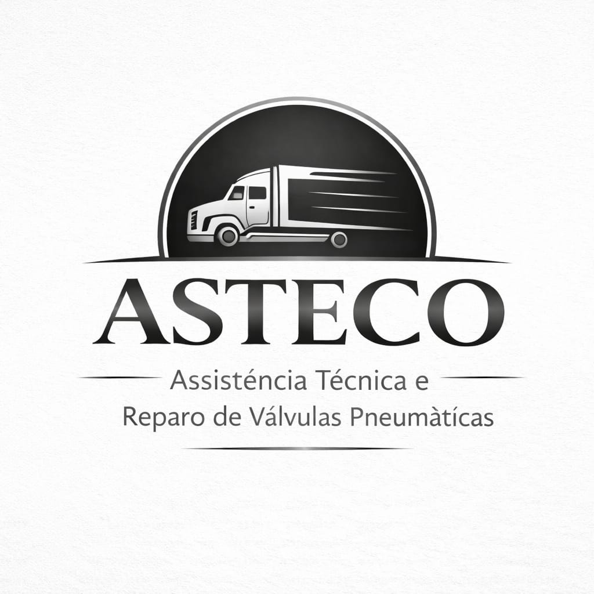

Na ASTECO, unimos tradição e inovação para oferecer soluções confiáveis em manutenção e recuperação de sistemas pneumáticos. Somos especialistas no reparo de válvulas pneumáticas, convencionais e eletrônicas.
Atuamos também com consultoria técnica para ônibus e caminhões, garantindo desempenho, segurança e maior vida útil para os seus equipamentos.
Contamos com uma equipe altamente qualificada, com quase três décadas de experiência em montadoras como Mercedes-Benz e DaimlerChrysler.
Solicite um orçamento rápido.
Chamar no WhatsApp